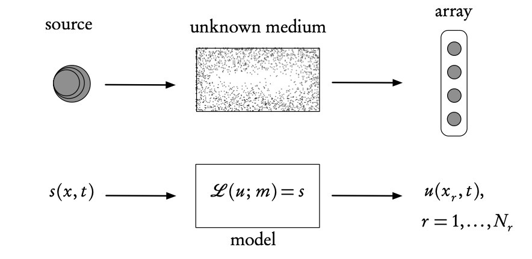

Adjoint state
Inverse Problems
2024-01-22

Inverse problems

Ingredients of an inverse problem: the physical reality (top) and the direct mathematical model (bottom). The inverse problem uses the difference between the model- predicted observations, u (calculated at the receiver array points xr), and the real observations measured on the array, in order to find the unknown model parameters, m, or the source s (or both).
Adjoint-state Methods
A very general approach for solving inverse problems... including Machine Learning!
Variational DA is based on an adjoint approach.
Definition 1 An adjoint is a general mathematical technique, based on variational calculus, that enables the computation of the gradient of an objective, or cost functional with respect to the model parameters in a very efficient manner.
Adjoint-state—continuous formulation
Let \(\mathbf{u}(\mathbf{x},t)\) be the state of a dynamical system whose behavior depends on model parameters \(\mathbf{m}(\mathbf{x},t)\) and is described by a differential operator equation \[\mathbf{L}(\mathbf{u},\mathbf{m})=\mathbf{f},\] where \(\mathbf{f}(\mathbf{x},t)\) represents external forces.
Define a cost function \(J(\mathbf{m})\) as an energy functional1 or, more commonly, as a misfit functional that quantifies the error (\(L^{2}\)-distance2) between the observation and the model prediction \(\mathbf{u}(\mathbf{x},t;\mathbf{m}).\) For example, \[J(\mathbf{m})=\int_{0}^{T}\int_{\Omega}\left(\mathbf{u}(\mathbf{x},t;\mathbf{m})-\mathbf{u}^{\mathrm{obs}}(\mathbf{x},t)\right)^{2}\,\mathrm{d}\mathbf{x}\:\mathrm{d}t,\] where \(\mathbf{x}\in\Omega\subset\mathbb{R}^{n},\,n=1,2,3,\) and \(0\le t\le T.\)
Adjoint-state—continuous formulation
Our objective is to choose the model parameters \(\mathbf{m}\) as a function of the observed output \(\mathbf{u}^{\mathrm{obs}},\) such that the cost function \(J(\mathbf{m})\) is minimized.
The minimization is most frequently performed by a gradient-based method, the simplest of which is steepest gradient, though usually some variant of a quasi-Newton approach is used, see Asch (2022), Wright (2006).
If we can obtain an expression for the gradient, then the minimization will be considerably facilitated.
This is the objective of the adjoint method that provides an explicit formula for the gradient of \(J(\mathbf{m}).\)
Adjoint methods—optimization formulation
Suppose we are given a (P)DE,
\[F(\mathbf{u};\mathbf{m})=0, \tag{1}\]
where
\(\mathbf{u}\) is the state vector,
\(\mathbf{m}\) is the parameter vector, and
\(F\) includes the partial differential operator \(\mathbf{L},\) the right-hand side (source) \(\mathbf{f},\) boundary and initial conditions.
Note that the components of \(\mathbf{m}\) can appear as any combination of
coefficients in the equation,
the source,
or as components of the boundary/initial conditions.
To solve this very general parameter estimation problem, we are given a cost function \(J(\mathbf{u};\mathbf{m}).\)
The constrained optimization problem is then \[\begin{cases} \underset{\mathbf{m}}{\operatorname{minimize}} & J\left(\mathbf{u}(\mathbf{m});\mathbf{m}\right)\\ \mathrm{subject\,to} & F(\mathbf{u};\mathbf{m})=0, \end{cases}\] where \(J\) can depend on both \(\mathbf{u}\) and on \(\mathbf{m}\) explicitly in the presence of eventual regularization terms.
Note
the constraint is a (partial) differential equation and
the minimization is with respect to a (vector) function.
This type of optimization is the subject of variational calculus, a generalization of classical calculus where differentiation is performed with respect to a variable, not a function.
The gradient of \(J\) with respect to \(\mathbf{m}\) (also known as the sensitivity) is then obtained by the chain-rule, \[\nabla_{\mathbf{m}}J=\frac{\partial J}{\partial\mathbf{u}}\frac{\partial\mathbf{u}}{\partial\mathbf{m}}+\frac{\partial J}{\partial\mathbf{m}}.\]
The partial derivatives of \(J\) with respect to \(\mathbf{u}\) and \(\mathbf{m}\) are readily computed from the expression for \(J,\)
but the derivative of \(\mathbf{u}\) with respect to \(\mathbf{m}\) requires a potentially very large number of evaluations, corresponding to the product of the dimensions of \(\mathbf{u}\) and \(\mathbf{m}\) that can both be very large.
The adjoint method is a way to avoid calculating all of these derivatives.
We use the fact that if \(F(\mathbf{u};\mathbf{m})=0\) everywhere, then this implies that the total derivative of \(F\) with respect to \(\mathbf{m}\) is equal to zero everywhere too.
Differentiating the PDE 1, we can thus write \[\frac{\partial F}{\partial\mathbf{u}}\frac{\partial\mathbf{u}}{\partial\mathbf{m}}+\nabla_{\mathbf{m}}F=0.\]
This can be solved for the untractable derivative of \(\mathbf{u}\) with respect to \(\mathbf{m},\) to give \[\frac{\partial\mathbf{u}}{\partial\mathbf{m}}=-\left(\frac{\partial F}{\partial\mathbf{u}}\right)^{-1}\nabla_{\mathbf{m}}F\] assuming that the inverse of \(\partial F/\partial{\mathbf{u}}\) exists.
Substituting in the expression for the gradient of \(J,\) we obtain \[\begin{aligned} \nabla_{\mathbf{m}}J & =-\frac{\partial J}{\partial\mathbf{u}}\left(\frac{\partial F}{\partial\mathbf{u}}\right)^{-1}\nabla_{\mathbf{m}}F+\frac{\partial J}{\partial\mathbf{m}},\\ & =\mathbf{p}\nabla_{\mathbf{m}}F+\frac{\partial J}{\partial\mathbf{m}} \end{aligned}\]
where we have conveniently defined \(\mathbf{p}\) as the solution of the adjoint equation \[\left(\frac{\partial F}{\partial\mathbf{u}}\right)^{\mathrm{T}}\mathbf{p}=-\frac{\partial J}{\partial\mathbf{u}}.\]
Adjoint Methods—summing up
In summary, we have a three-step procedure that combines a model-based approach (through the PDE) with a data-driven approach (through the cost function):
Solve the adjoint equation for the adjoint state, \(\mathbf{p}.\)
Using the adjoint state, compute the gradient of the cost function \(J.\)
Using the gradient, solve the optimization problem to estimate the parameters \(\mathbf{m}\) that minimize the mismatch between model and observations.
Important
This key result enables us to compute the desired gradient \(\nabla_\mathbf{m}J\), without the explicit knowledge of the variation of \(\mathbf{u}\).
A number of important remarks can be made.
We obtain explicit formulas — in terms of the adjoint state — for the gradient with respect to each/any model parameter. Note that this has been done in a completely general setting, without any restrictions on the operator \({F}\) or on the model parameters \(\mathbf{m}.\)
The computational cost is one solution of the adjoint equation which is usually of the same order as (if not identical to) the direct equation, but with a reversal of time. Note that for nonlinear equations this may not be the case and one may require four or five times the computational effort.
The variation (Gâteaux derivative) of \({F}\) with respect to the model parameters \(\mathbf{m}\) is, in general, straightforward to compute.
We have not explicitly considered boundary (or initial) conditions in the above, general approach. In real cases, these are potential sources of difficulties for the use of the adjoint approach — see Section 8.7.3, where the the discrete adjoint can provide a way to overcome this hurdle.
For complete mathematical rigor, the above development should be performed in an appropriate Hilbert space setting that guarantees the existence of all the inner products and adjoint operators. The interested reader could consult Tröltzsch (2010).
In many real problems, the optimization of the misfit functional leads to multiple local minima and often to very “flat” cost functions. These are hard problems for gradient-based optimization methods. These difficulties can be (partially) overcome by a panoply of tools:
Regularization terms can alleviate the non-uniqueness problem.
Rescaling the parameters and/or variables in the equations can help with the “flatness.” This technique is often employed in numerical optimization.
Hybrid algorithms, that combine stochastic and deterministic optimization (e.g., Simulated Annealing), can be used to avoid local minima.
Judicious use of machine learning techniques and methods.
- When measurement and modeling errors can be modeled by Gaussian distributions and a background (prior) solution exists, the objective function may be generalized by including suitable covariance matrices. This is the approach employed systematically in data assimilation, see below.
Adjoint-state method—Discrete systems
In practice, we often work with discretized systems of equations, e.g. discretized PDEs.
Assume that \(\mathbf{x}\) depends, as usual on a parameter vector, \(\mathbf{m}\), made up of \(p\)
- control variables, design parameters, or decision parameters
Goal: To optimize these values for a given cost function, \(J(\mathbf{x}, \mathbf{m})\), we need to
- evaluate \(J(\mathbf{x}, \mathbf{m})\) and compute, as for the continuous case, the gradient \(\mathrm{d}J/\mathrm{d}\mathbf{m}\).
Possible with an adjoint-state method at a cost that is independent of \(p\).
Involves inversion of linear system at \(\mathcal{O}(n^3)\) operations — making it computational feasible to deal with problems of this type
\[A[\mathbf{m}]\mathbf{x}=\mathbf{b} \tag{2}\]
where \(A[\mathbf{m}]\) represents the discretized PDE, \(\mathbf{m}\) spatially varying coefficients of the PDE, and \(\mathbf{b}\) a source term.
Automatic Differentiation
Gradients w.r.t \(\mathbf{m}\) of objectives that include \(A[\mathbf{m}]\), e.g.
\[J(\mathbf{m})=\frac{1}{2}\|\mathbf{b}-PA^{-1}[\mathbf{m}]\mathbf{q}\|^2_2\]
can be calculated with the adjoint-state method leading to
- fast and scalable codes (e.g. Full-waveform inversion)
- but coding can be involved especially when combined with machine learning (e.g. when \(\mathbf{m}\) is parameterized by a neural network)
Use automatic differentiation (AD) tools instead of analytical tools.
Two approaches to compute the adjoint state and the resulting gradients
- Continuous case — discretization of the (analytical) adjoint, denoted by AtD = adjoint then discretize;
- Discrete case — adjoint of the discretization (the code), denoted as DtA = discretize then adjoint.
Problems AD
Realistic (complex and large scale) solved with DtA using AD — provided by ML
- PyTorch, TensorFlow (Python), or Flux.jl/Zygote.jl (Julia)
Caution
While convenient, AD as part of ML tools (known as backpropagation)
- may not scale
- integrates poorly with existing CSE codes
Tip
Solution: Combine hand-derived gradients (via the adjoint-state method) w/ Automatic Differentiation
- use ChainRules.jl to include hand-derived gradients in AD systems (e.g. Zygote.jl)
- known as intrusive automatic differentiation (Li et al. 2020), see e.g. Louboutin et al. (2023) for Julia implementation
We will devote a separate lecture on AD.